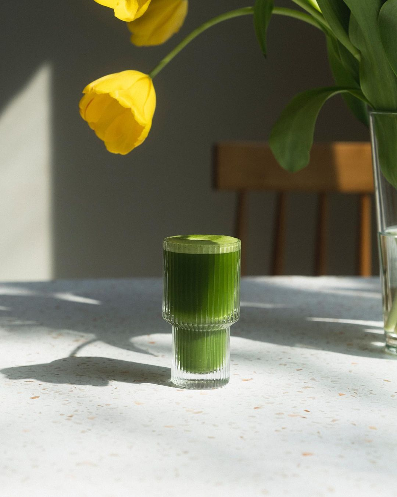
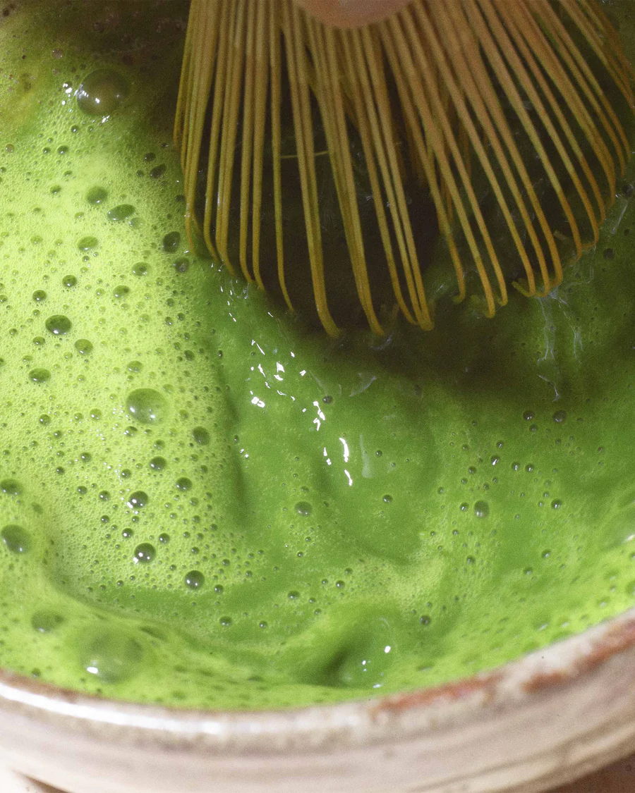

A new kind of drip with 1/3 the caffeine as coffee, get sustainable clean energy without the jitters
FAQ
What is Matcha?
Matcha is finely ground green tea leaf traditionally consumed to boost energy and promote focus. Unlike other teas where you are drinking only an extract, with matcha the entire leaf is consumed to provide not only caffeine but a whole cup of amino acids, nutrients, and chlorophyll. Energy without the crash, focus without the jitters.
.
How It's Made?
Fueled by Volcanoes
Our founders were first introduced to this mineral rich distinctively tasting matcha by Max’s family in Japan. The Ando’s purchased their tea’s from this region, known for the fertile soils packed with higher levels of nitrogen. Still to this day it is one of Kyushu’s best kept secrets.
Farm To Bowl Approach
Would you eat a stale salad? Probably not.
The same goes for your matcha.
Our “Farm to bowl” promise means that we will never carry matcha beyond the six month mark from the date of its creation. Always fresh, delicious, and packed full of the cleanest energy on the planet.
.
How to prepare?

Prepare 2g (about 1 tsp) with 75 mL (2.5 oz) of hot water at 80º C (175º F). Whisk and enjoy hot or cold with
your favorite dairy or dairy alternative.
You can find all the tools you need in our Matcha Kit.
Details
Nekohama's Ceremonial Matcha is harvested on the island of Kyushu by our family operated farm.
Naturally sweet, no bitterness, with a creamy umami flavor unique to Nekohama
Single Origin - JAS Certified Organic (Japanese Agricultural Standards)
Freshest matcha powder available (learn more about our 6 month guarantee here)
Pesticide Free
Nekohama’s deep green color is complemented by a light floral sweetness, the absence of bitterness, and a
100% satisfaction guarantee.
Our matcha is stored in temperature controlled freezers to guarantee freshness and taste
We use Japanese biodegradable UV light-protected packaging to guarantee every cup of Nekohama
Nekohama is created to boost cognition, energy, and stress management
For optimal experience consume matcha daily for two weeks for full effect
Our 40g bag makes 20 servings of matcha.
Subscribe and save over 20% on your monthly delivery today.
Product of Japan

History
Matcha is finely ground green tea leaf traditionally consumed to boost energy and promote focus. Unlike other
teas where you are drinking only an extract, the entire leaf is consumed to provide not only caffeine but a
whole cup of antioxidants, vitamins, and amino acids. Energy without the crash, this is the morning routine
you need to win your day.
Just, clean and delicious.
Join the family
Free US shipping on your first order when you sign up for the Nekohama newsletter.